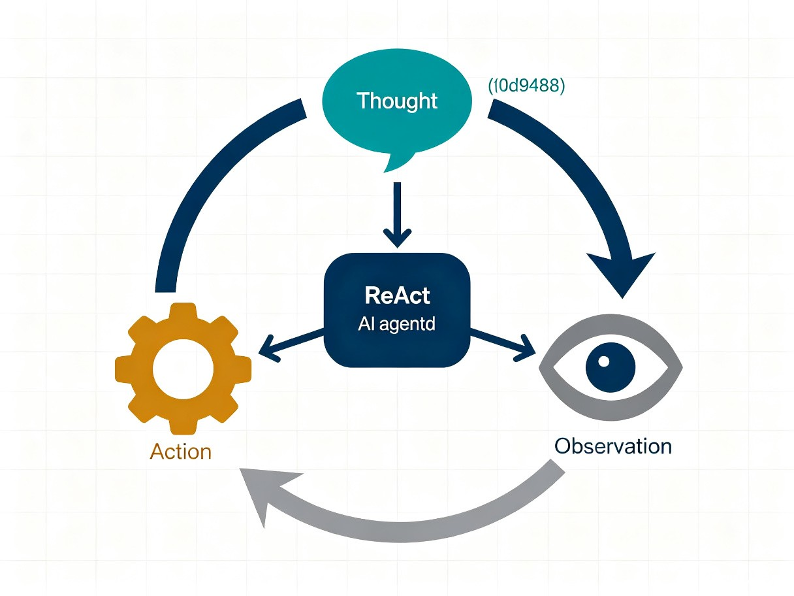
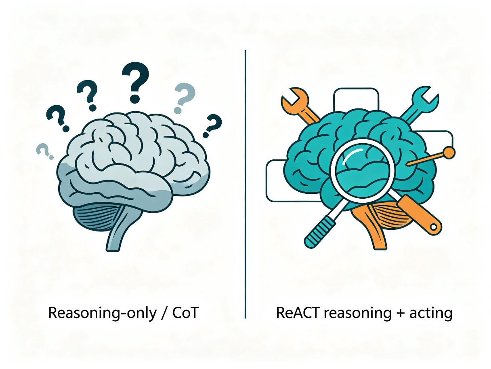
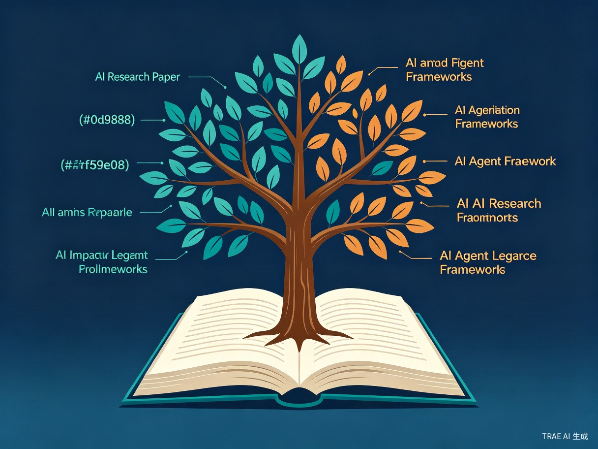

论文背景与动机
2022年底，大语言模型（LLM）已经展现出令人惊叹的能力，但研究者们发现了一个关键问题：推理（Reasoning）和行动（Acting）这两个核心能力一直被作为独立的话题分别研究。
以Chain-of-Thought（CoT）为代表的推理方法，让模型通过逐步思考来解决复杂问题，但它们完全依赖模型内部存储的知识，容易产生事实幻觉——模型会自信地编造不存在的信息。而以工具使用为代表的行动方法，虽然能让模型与外部环境交互获取信息，却缺乏高层规划和推理能力，容易陷入无效的重复操作。
来自普林斯顿大学和Google Brain的研究团队提出了一个自然的问题：如果我们让语言模型同时进行推理和行动，两者能否产生协同效应？这就是ReAct论文的出发点。
核心洞察：推理可以帮助模型制定、跟踪和调整行动计划，处理异常情况；而行动可以让模型从外部知识库或环境中获取额外信息，为推理提供事实支撑。两者结合，可以互相弥补各自的缺陷。
核心方法：ReAct框架
ReAct的命名来自Reasoning（推理）和Acting（行动）的缩写组合。其核心思想极其优雅：将Agent的动作空间从单纯的外部动作扩展为外部动作 + 语言思考的联合空间。
形式化定义
在ReAct框架中，Agent在时刻 t 收到环境观察 ot，然后根据策略选择一个动作 at。这个动作可以是：
- Thought（思考）：一段语言推理，不直接影响外部环境，但会更新Agent的内部上下文
- Action（行动）：一个与外部环境交互的操作（如搜索、查找、使用工具等）
Agent的完整上下文由所有历史的 Thought-Action-Observation 三元组组成，形成一个不断增长的推理轨迹。
Thought的多种角色
ReAct中的"思考"并非简单的内心独白，而是承担着多种重要功能：
任务分解与规划
将复杂目标拆解为可执行的子步骤，制定行动计划
常识知识注入
调用世界知识辅助推理，如"台灯可能在桌子上或架子上"
信息提取
从观察结果中提取关键信息，过滤噪声
进度跟踪
监控任务完成进度，决定下一步行动方向
异常处理
当遇到意外情况时调整计划，如"盐用完了，用酱油代替"
综合推理
执行逻辑推理、算术计算，综合信息得出最终答案
两种推理模式
ReAct根据任务类型灵活调整推理密度：

| 模式 | 适用场景 | Thought密度 | 示例任务 |
|---|---|---|---|
| 密集推理 | 需要多步逻辑推理的知识密集型任务 | 每一步都有Thought | HotpotQA、Fever |
| 稀疏推理 | 以行动为主的交互式决策任务 | 仅在关键节点出现 | ALFWorld、WebShop |
实现方式
ReAct的实现方式非常简洁——完全通过 few-shot prompting 实现，无需训练。研究者使用冻结参数的PaLM-540B模型，只需提供1-6个人工编写的完整任务解决轨迹作为示例，模型就能学会ReAct的推理模式。这种零训练成本的设计使得ReAct具有极强的通用性和可迁移性。
四种范式对比
论文通过一个经典的HotpotQA问题（"除了导演之外，At the Movies 和 Welcome to the Jungle 这两部电影还有什么共同之处？"），直观展示了四种不同提示方法的表现差异：

| 范式 | 工作方式 | 优势 | 致命缺陷 |
|---|---|---|---|
| Standard | 直接生成答案，无推理过程 | 简单高效 | 无法处理复杂问题，准确率最低 |
| CoT（仅推理） | 生成思维链推理，依赖内部知识 | 逻辑推理能力强 | 56%的失败来自事实幻觉 |
| Act-only（仅行动） | 执行搜索操作，缺乏推理 | 能获取外部信息 | 无法综合信息，容易陷入无效搜索 |
| ReAct（推理+行动） | 交替生成思考和行动 | 推理指导行动，行动支撑推理 | 幻觉率降至0% |
关键发现：CoT在推理过程中会编造事实（如错误地说某部电影于1997年上映），而Act-only虽然能搜索到正确信息，却不知道如何综合多个搜索结果。ReAct完美结合了两者——先用推理决定搜索什么，再从搜索结果中提取关键信息进行推理，最终得到正确答案。
实验一：知识密集型推理
研究者在两个经典NLP基准上测试了ReAct的效果：HotpotQA（多跳问答）和Fever（事实验证）。模型使用PaLM-540B，搭配简单的Wikipedia API（search/lookup/finish三种操作）。
HotpotQA：多跳问答
HotpotQA要求模型通过多个维基百科文档之间的跳转来回答复杂问题，是测试多步推理能力的经典基准。
从数据中可以观察到几个重要趋势：
- ReAct单独使用时（27.4%）略低于CoT（29.4%），因为HotpotQA的推理链较长，ReAct的结构约束在一定程度上限制了推理灵活性
- 但ReAct + CoT-SC 组合方法达到35.4%，超越所有基线，仅需3-5个样本即可达到纯CoT-SC 21个样本的性能
- Act-only（25.7%）表现最差，说明单纯的搜索能力不足以完成多跳推理
Fever：事实验证
Fever任务需要判断给定声明是否为真，通常需要查证具体事实。这个任务对知识准确性的要求极高。
在Fever上，ReAct的优势更加明显：ReAct（60.9%）显著优于CoT（56.3%），因为事实验证高度依赖准确的外部知识，CoT的内部知识幻觉成为致命弱点。CoT-SC + ReAct组合方法更是达到了64.1%的最佳成绩。
人工误差分析
研究者对HotpotQA上的失败案例进行了细致的人工分析，揭示了各方法截然不同的失败模式：
核心结论：ReAct最大的优势在于几乎消除了事实幻觉（0% vs CoT的56%），因为每一步推理都有外部检索的事实作为支撑。其代价是推理错误率较高（47% vs CoT的16%），主要表现为重复循环——模型在找不到有用信息时会反复执行相同的搜索操作。
实验二：交互式决策任务
ReAct在交互式决策任务上的表现更加令人印象深刻，充分展示了推理与行动协同的威力。
ALFWorld：文本家庭环境
ALFWorld是一个基于文本的家庭环境模拟游戏，Agent需要理解自然语言指令，在虚拟家庭中导航、查找和使用物品来完成家务任务（如"把苹果放进冰箱"）。
ReAct在ALFWorld上达到了71%的成功率，比Act-only高出26个百分点，比模仿学习方法BUTLER高出34个百分点。论文给出了一个生动的例子：Act-only模型在找不到物品时会反复执行"go to countertop"陷入死循环，而ReAct模型会通过Thought推理"台灯可能在桌子上、架子上或梳妆台上"，然后有策略地逐一搜索。
WebShop：模拟电商购物
WebShop模拟了一个真实的电商网站环境，Agent需要根据用户的购物需求（如"买一款适合5岁女孩的生日礼物，预算50美元以内"）浏览商品、比较选项并做出购买决策。
ReAct比强化学习基线高出约10个百分点的绝对成功率，且仅使用1-2个in-context示例，远少于传统方法需要的大量训练数据。
微调与模型缩放
论文还探索了一个极具实用价值的问题：能否用ReAct格式的轨迹来微调更小的语言模型？
Bootstrapping微调方法
研究者利用PaLM-540B生成的约3000条正确的ReAct轨迹，对PaLM-8B和PaLM-62B进行微调。结果令人振奋：
关键发现：微调后的PaLM-8B ReAct超越了所有PaLM-62B的prompting方法，微调后的PaLM-62B ReAct超越了所有PaLM-540B的prompting方法。这意味着微调ReAct本质上是教模型"如何寻找信息并推理"的能力，而微调CoT本质上是教模型"背诵"知识——前者具有更强的泛化能力。
可解释性与人类对齐
ReAct的一个独特优势是其生成的完整推理轨迹具有极高的可解释性。论文通过Human-in-the-loop实验展示了这一特性：
人类纠正实验
当Agent在执行过程中偏离正确方向时，人类只需修改其中一句Thought，Agent就能根据修正后的上下文自我调整后续的Action，重新回到正确轨道。这种能力在CoT或Act-only范式中是无法实现的——CoT没有外部交互的切入点，Act-only没有可供修改的推理过程。
观察轨迹
人类审查Agent的完整Thought-Action-Observation轨迹
定位问题
找到导致偏差的关键Thought步骤
修改思考
仅修改该Thought的内容，无需重写Prompt或调整参数
自我修正
Agent基于修正后的上下文自动调整后续行动
实践意义：这种"可编辑的推理过程"为AI安全和对齐提供了新的思路——我们不需要重新训练模型或设计复杂的奖励函数，只需在推理过程中进行最小干预即可纠正Agent行为。
局限性与未来展望
尽管ReAct取得了显著成果，论文也诚实地讨论了其存在的局限性：
| 局限性 | 详细说明 | 潜在影响 |
|---|---|---|
| 上下文窗口消耗 | Thought和Observation会迅速填满LLM的上下文窗口 | 限制长任务的执行能力 |
| 推理灵活性受限 | Thought-Action-Observation结构约束了推理步骤的形式 | 在纯推理任务上可能不如自由形式的CoT |
| 重复循环问题 | 模型可能反复执行相同的Thought和Action，无法跳出 | 占推理错误的47% |
| 检索质量依赖 | 非信息性搜索结果占错误案例的23% | 检索失败时模型难以恢复 |
| 与人类专家差距 | ALFWorld：71% vs 人类97%；WebShop差距也很大 | 仍有巨大提升空间 |
| 小模型prompting困难 | PaLM-8B/62B上prompting ReAct效果较差 | 需要微调才能发挥潜力 |
对未来研究的启示
ReAct论文为后续研究指明了多个方向：如何设计更好的上下文管理策略来缓解窗口限制？如何引入循环检测机制来避免重复？如何结合更强的检索器来提升信息获取质量？这些问题在后续的Agent框架（如AutoGPT、Toolformer、HuggingGPT等）中得到了不同程度的探索。
影响与遗产
ReAct论文被ICLR 2023评为Notable Top 5%论文，截至2026年已被引用超过5000次，被广泛认为是AI Agent时代的"开山论文"。

核心贡献总结
统一范式
首次系统性地将推理和行动以交错方式结合，形成通用Agent框架
广泛验证
在知识推理和交互决策四类任务上全面验证有效性
深入消融
系统对比三种范式，揭示推理与行动各自的价值和局限
组合策略
ReAct + CoT-SC有效结合内部知识与外部知识
微调潜力
小模型微调后可超越大模型prompting，极具实用价值
人类对齐
可编辑推理轨迹为AI安全提供了新思路
对后续工作的影响
ReAct的核心思想——让语言模型通过Thought-Action-Observation循环与外部世界交互——已成为现代AI Agent的标准范式。从LangChain的Agent模块到OpenAI的Function Calling，从AutoGPT到Claude的Tool Use，几乎所有主流Agent框架都直接或间接受到了ReAct的启发。
更重要的是，ReAct揭示了一个深刻的洞察：推理和行动不是对立的，而是互补的。最好的AI系统不是"最聪明的思考者"或"最强大的行动者"，而是能够灵活地在思考和行动之间切换、让两者相互增强的系统。
一句话总结：ReAct教会了AI一个人类早已掌握的道理——三思而后行，行而后三思。这种"边想边做"的范式，正在成为构建通用人工智能的重要基石。